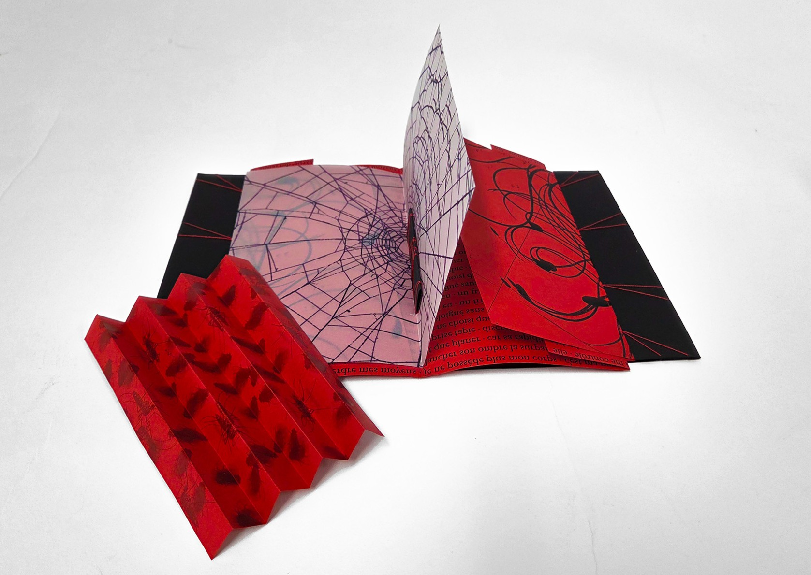

« C’est ma peur qui me contrôle · elle rentre dans mes nerfs et me paralyse · c’est viscéral »
Objectif : créer un livre-objet qui met en scène la notion de minuscule en matérialisant l’arachnophobie. Questionner la manière dont une bête minuscule peut générer une peur démesurée.


La lecture se fait en plusieurs couches, d’abord il faut sortir l’ouvrage de sa couverture calque qui incarne le cocon, puis il faut oser rentrer dans l’intimité de l’araignée en ouvrant le livre couvert de cette imposante reliure qui vient se refermer aux marges.
Alors la toile apparait et couve une glissière renfermant ses proies. Le texte décrit des expériences personnelles témoignant de ma phobie.


